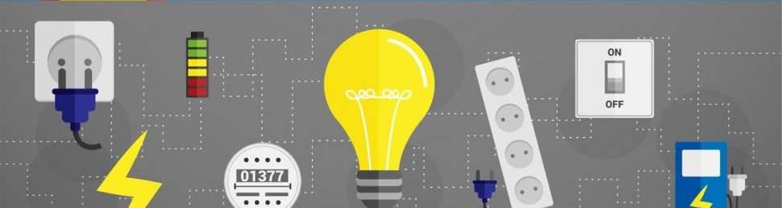
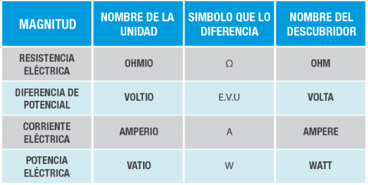

Se denominan Magnitudes físicas, a las propiedades de los cuerpos que pueden medirse y para determinar esto es necesario compararlas con algunas otras de la misma especie que se toma como patrón o unidad de medida.
El resultado de una medida se expresa mediante una cantidad numérica seguida de la unidad utilizada y los nombres para la unidad tienen que cumplir una serie de normas incluyendo también un símbolo que destaque y diferencie una unidad de otra para que se ubique dentro de un lenguaje universal.
En electrónica, se tiene una gran variedad de unidades de medida, destinadas para cada uno de los fenómenos que comprometen a la misma; estas unidades tienen su propio nombre y símbolo, casi siempre en honor a su descubridor.
Dentro de las unidades eléctricas más relevantes, y de las cuales se destaca su magnitud se encuentran:
